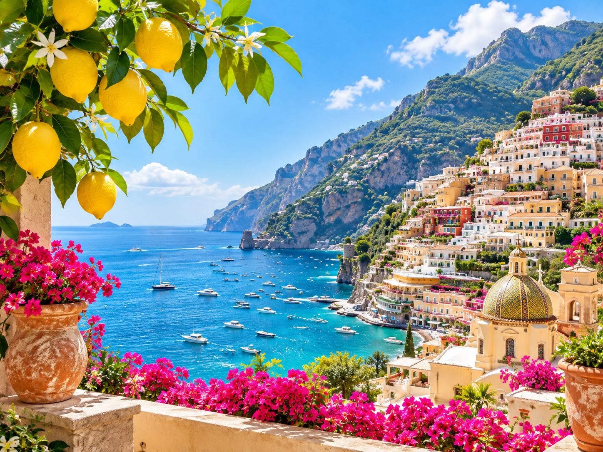
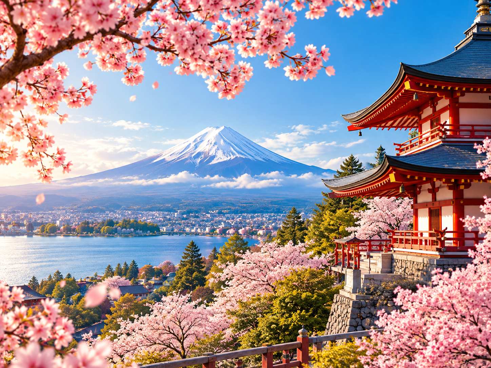

Welcome to Beyond Borders
Explore the world without leaving your city!
Discover different cultures through interactive
workshops, traditional food, languages,
and exciting cultural experiences.
Explore Our Experiences

French Basics Workshop
Learn everyday French phrases
and expressions.
80SAR
Discover French greetings, useful words, and basic conversation skills.
Join Workshop
Italian Pasta Workshop
Discover the art of making
traditional Italian pasta.
100SAR
Learn about Italian ingredients and traditional pasta preparation techniques.
Join Workshop
Sushi Making Workshop
Learn how to prepare
delicious Japanese sushi.
120SAR
Explore Japanese food culture and practice basic sushi-making techniques.
Join WorkshopExplore Destinations
Explore a country and discover its culture.
France
Explore French traditions through pottery and language workshops.
French pottery has a long artistic history, especially in Provence, where colorful handmade ceramics are part of local traditions. The French language is also known for its elegant expressions and polite greetings

Italy
Explore Italian culture through pasta and traditional food experiences.
Fresh pasta is an important part of Italian family traditions, with recipes passed down through generations. Southern Italy, especially the Amalfi Coast, is famous for its fragrant lemons, which are used in traditional desserts and local specialties.

Japan
Experience Japanese traditions through sushi making and tea ceremonies.
Sushi has been part of Japanese food culture for centuries, reflecting the importance of fresh ingredients and careful preparation. Matcha is traditionally prepared during Japanese tea ceremonies, which emphasize harmony, respect, and mindfulness.
What Our Members Say
Sushi Making Workshop
"I loved the Japanese cultural experience. It was fun and educational!"
★★★★★
- Sara
Italian Pasta Workshop
"The Italian cooking workshop was amazing. I learned something new!"
★★★★☆
- Nora
French Basics Workshop
"The French workshop was fun and easy to learn!"
★★★★★
- Lulu